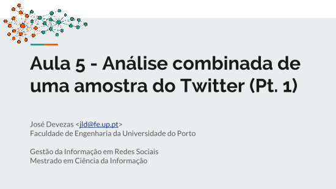

<div class="row">
	<div class="col-md-12">
    <section>
      <h1 id="feup-mci-girs">FEUP &ndash; MCI:GIRS</h1>

      <p>During 2017/2018, I lectured a social network analysis component in the Information Management in Social
        Networks course, of the Master in Information Science at the Faculty of Engineering of the University of Porto.
        Below, you can find the slides I prepared for those classes, which provide an overview on the area of Network
        Science (in Portuguese) and describe a basic set of metrics and techniques for the structural and textual
        analysis of a social network sample.</p>

      <div class="vertical-space"></div>

      <div class="row presentation-grid">
        <div class="col-md-12">
          <div class="presentation">
            <a href="lectures/feup/mci/girs/girs_-_aula_1_-_introducao_a_analise_de_redes_sociais.pdf"
              title="Introdução à análise de redes sociais" target="_blank">
              </a>
          </div>

          <div class="presentation">
            <a href="lectures/feup/mci/girs/girs_-_aula_2_-_introducao_as_ferramentas_de_analise.pdf"
              title="Introdução às ferramentas de análise" target="_blank">
              </a>
          </div>

          <div class="presentation">
            <a href="lectures/feup/mci/girs/girs_-_aula_3_-_analise_estrutural_de_uma_amostra_do_twitter.pdf"
              title="Análise estrutural de uma amostra do Twitter" target="_blank">
              </a>
          </div>

          <div class="presentation">
            <a href="lectures/feup/mci/girs/girs_-_aula_4_-_analise_textual_de_uma_amostra_do_twitter.pdf"
              title="Análise textual de uma amostra do Twitter" target="_blank">
              </a>
          </div>

          <div class="presentation">
            <a href="lectures/feup/mci/girs/girs_-_aula_5_-_analise_combinada_de_uma_amostra_do_twitter_pt._1_.pdf"
              title="Análise combinada de uma amostra do Twitter - Pt. 1" target="_blank">
              </a>
          </div>

          <div class="presentation">
            <a href="lectures/feup/mci/girs/girs_-_aula_6_-_analise_combinada_de_uma_amostra_do_twitter_pt._2_.pdf"
              title="Análise combinada de uma amostra do Twitter - Pt. 2" target="_blank">
              </a>
          </div>
        </div>
      </div>
    </section>
  </div>
</div>
